STEP 01 / GET READY
JFrog AI Security Workshop
领取自己的账号，点击初始化环境。程序会检测工具版本，优先使用本地安装包，缺包时自动从官网下载，并完成安装与验证。
>_INITIALIZE ENVIRONMENT
获取 Workshop 文件
初始化环境前，先在终端执行以下命令，将 Workshop 仓库下载到本机并进入学员目录。
终端
git clone https://github.com/slash-l/jfrog-ai-workshop.git
cd jfrog-ai-workshop/user
01
初始化环境
按讲师分配的信息填写。输入本人密码，初始化时自动获取 24 小时有效的本人 Access Token，配置 JFrog CLI，并验证项目访问与连接。密码不会保存到页面记录或安装日志。
自动识别操作系统与 CPU；已满足版本的工具自动跳过。
等待连接本机启动器。
尚未开始初始化。
优先使用本地 tools 中对应系统与架构的安装包；缺少时从工具官网下载到
tools，校验后再安装。工具安装在本人的 ~/.jfrog-workshop，程序会配置
PATH、实验目录以及本人的项目环境信息。无需 sudo。
按钮会自动做哪些操作？
- 检查 OpenCode、Node.js、npx、JFrog CLI、jq、curl 的版本。
- 跳过符合要求的工具；需要安装时先查 tools，本地有包直接使用，缺包则从官网下载并缓存到 tools，校验 SHA256 后安装。
- 配置用户 PATH；准备实验目录与
readme.txt（保留已有文件）。
- 保存本人的平台 URL、userN 与 projectN 配置；配置中不包含密码或 Token。
- 使用本人账号和密码配置
workshop-userN，设为当前 JFrog CLI Server，验证 CLI 配置及
jf rt ping。密码仅交给 JFrog CLI 管理认证配置；自动签发 24 小时有效的本人 Access Token 并替换密码配置；使用 Token 验证本人项目访问及 ping，全部通过后开放 Next。
02
查看自动验证结果
下表来自本机脚本的实际检测；按钮执行失败时，请查看上方错误信息并联系讲师，修复后可重试。
0 / 6 个工具通过
初始化成功后，这里会显示实验目录和环境配置文件的位置。
STEP 01 / GITHUB CODESPACES
JFrog AI Security Workshop
本次 Workshop 通过 GitHub Codespaces 实验环境完成。
01
检查环境和工具
Codespaces 终端 · 检查预装工具
node --version
npx --version
opencode --version
jf --version
jf c show
jf rt ping
要求 Node.js ≥ 18、OpenCode ≥ 1.17.7、JFrog CLI ≥ 2.100.0。本页使用讲师准备的工具环境；若工具缺失或版本不足，先联系讲师补齐，再继续。
Codespaces 终端 · 只检查是否已设置
node -e 'for (const k of ["JFROG_URL","JFROG_PLATFORM_URL","JFROG_ACCESS_TOKEN","JF_PROJECT"]) console.log(k + ": " + (process.env[k] ? "SET" : "MISSING"))'
预期四个变量都显示 SET。该命令不会打印变量值。若显示 MISSING，检查 Secret 名称、仓库授权，然后停止并重新启动 Codespace。
Codespaces 终端 · 检查预装工具
node --version
npx --version
opencode --version
jf --version
要求 Node.js ≥ 18、OpenCode ≥ 1.17.7、JFrog CLI ≥ 2.100.0。本页使用讲师准备的工具环境；若工具缺失或版本不足，先联系讲师补齐，再继续。
02
验证 JFrog Agent Guard
- 在 Codespaces 左上角三横线主菜单中打开 Command Palette...，搜索并选择 Browse MCP Servers。
- 找到 JFrog Plugin，点击 Start。
- 按页面跳转到 JPD，使用本人账号完成认证授权。
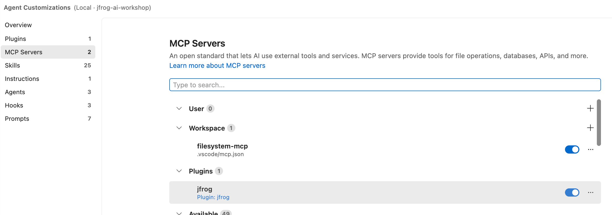
Browse MCP Servers 中启动 JFrog Plugin · 点击查看大图判断安装并启动完成：在 MCP Server 列表中看到 jfrog，状态显示 Running，说明 JFrog Agent Plugin 已安装并启动。
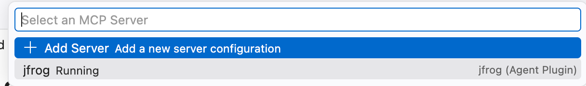
JFrog Agent Plugin 显示 Running · 点击查看大图判断服务连接并获取 tools：打开 JFrog Plugin 的 show log，看到日志出现 Discovered tools（例如 Discovered 84 tools），说明服务端已连接并成功获取 tools。
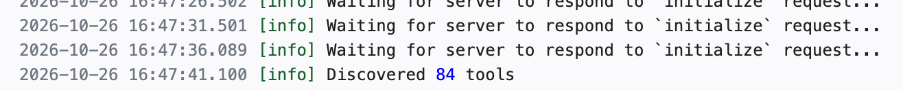
日志显示 Discovered tools · 点击查看大图
LAB 01 / MCP GOVERNANCE
Lab 01: MCP Server 治理
管理员将 filesystem MCP Server 不同 tools 授权加入项目，客户端 Agents 根据授权使用 MCP
使用讲师分配的本人账号和对应 Project。
01
MCP Marketplace 准入配置
用户操作使用当前用户账号登录 JFrog。
- 进入 AI/ML → AI Security → Marketplace → MCP Servers。
- 搜索
filesystem-mcp，点击 Add to Registry。 - 选择本人对应的
projectN，不要选择其他项目。 - 选择 Select tools manually → Allow List，仅填写或选择
view；不要选择 Allow all tools。 - 按界面完成后续配置并保存。在 Registry 中确认该服务器已允许用于本人项目，且仅开放
view。
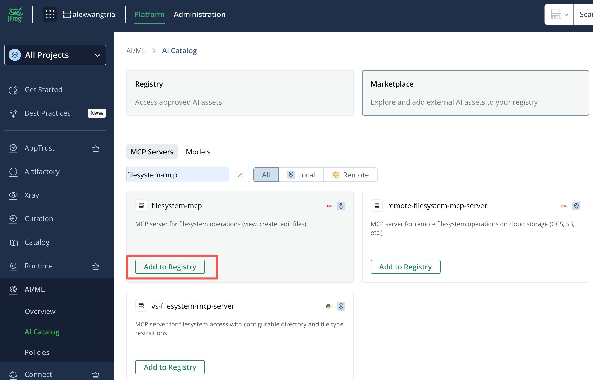
搜索 filesystem-mcp 并添加到 Registry · 点击查看大图
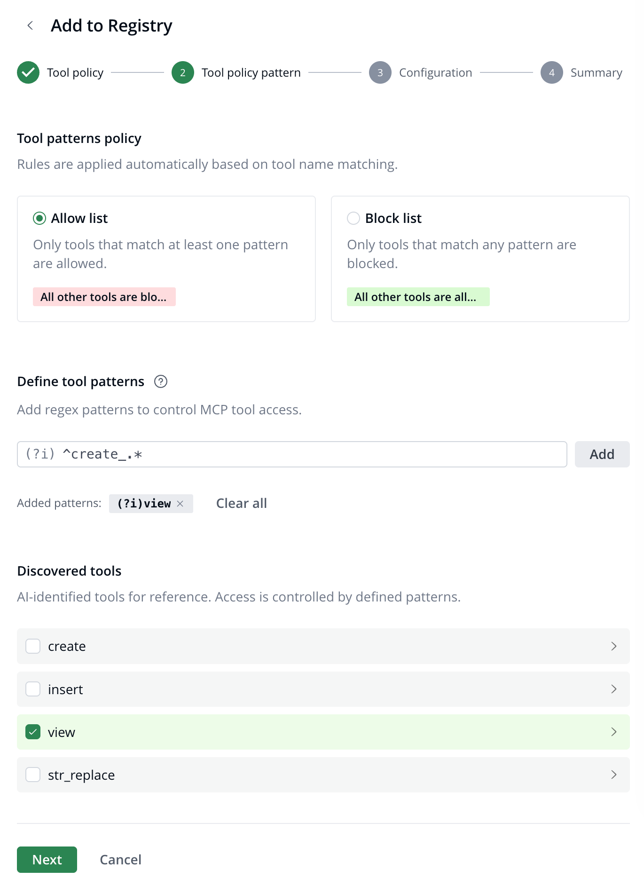
仅允许 view 工具 · 点击查看大图
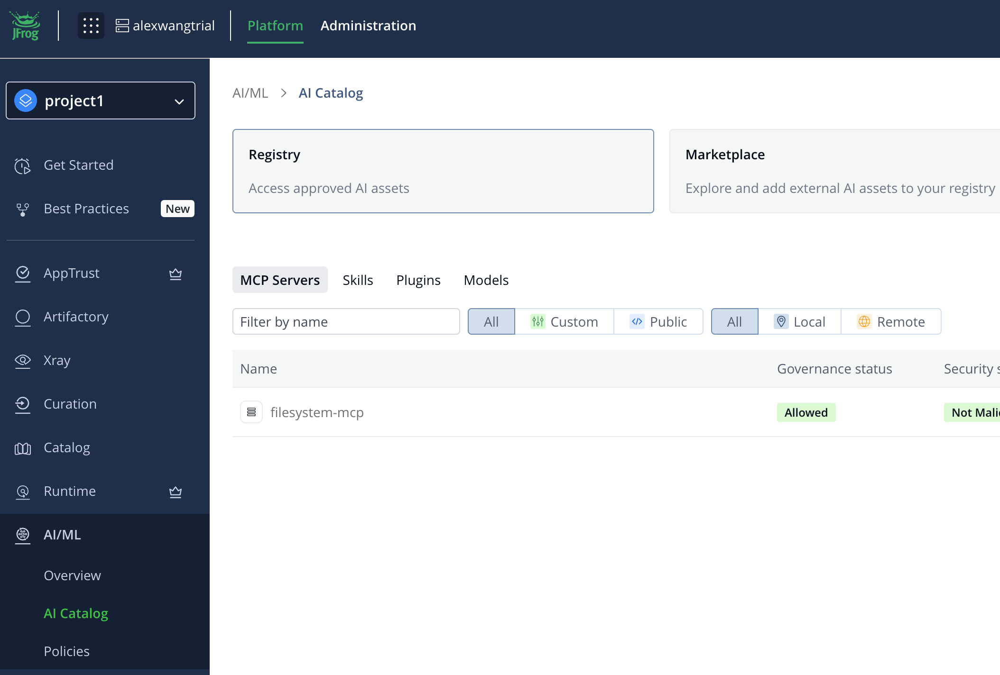
在 Registry 中确认准入配置 · 点击查看大图
检查点：filesystem-mcp 已在本人项目中准入；create、insert、str_replace 未开放。
02
客户端使用受限的 MCP Server
在 Chat 中依次输入以下内容，并根据返回结果确认客户端只能使用用户授权的 MCP tools。
Chat 输入 1
我的项目有哪些 mcp server 可以使用
验证效果：返回本人项目已授权的 MCP Server，包含 filesystem-mcp；未授权的服务器不应出现在可用列表中。
Chat 输入 2
安装 filesystem-mcp
验证效果：filesystem-mcp 安装成功，并且客户端只能看到用户授权的 view tool。
启动说明：安装成功后，客户端 Agent 会根据项目授权自动加载并启动 filesystem-mcp，无需在终端中单独运行服务器命令。等待客户端报告服务器已连接后，查看可用 tools，确认只有 view；如果服务器未连接，重新执行安装指令并检查 Agent Guard 的授权结果。
Chat 输入 3
安装 mongodb mcp server
验证效果：安装被拒绝，因为 mongodb MCP Server 未获得管理员授权。
Chat 输入 4
读取 lab_dir/workshop.md，显示实际文件内容。
验证效果：客户端通过 filesystem-mcp 的 view tool 读取并显示文件内容。
Chat 输入 5
在 lab_dir 中创建 test.txt，内容为 Hello JFrog Workshop。
验证效果：创建操作被拒绝，因为当前项目只授权了 view，未授权 create 等写入 tools。
03
开放 MCP 所有 tools
- 使用当前用户账号登录平台，进入 AI/ML → AI Security → Registry → MCP Servers。
- 打开
filesystem-mcp，选择本人的 projectN，点击 Edit。 - 将仅允许
view 的配置改为 Allow all tools，按界面完成后续步骤并保存配置。
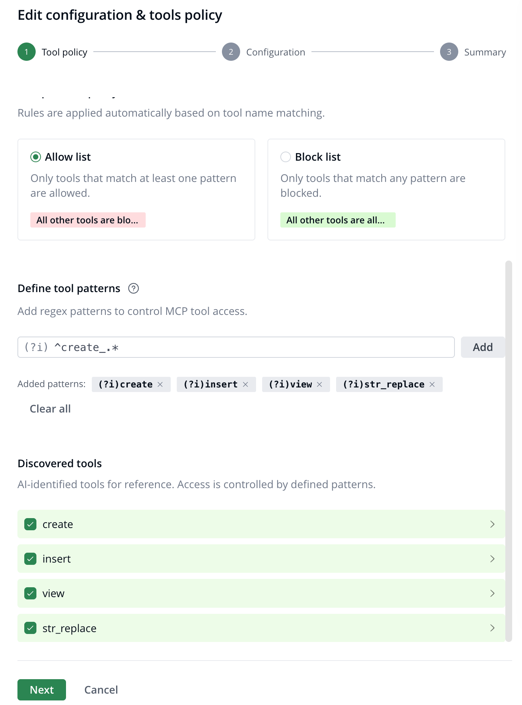
选择 Allow all tools 并保存配置 · 点击查看大图04
客户端 Agent 使用 tools 全开放的 MCP
在 Chat 中输入以下内容，验证客户端 Agent 可以使用用户开放的写入 tools。
保存授权后，在客户端 MCP Server 列表中重启 filesystem-mcp。查看日志，确认出现 tools: 4 和 Discovered 4 tools，表示客户端已重新读取授权并检测到 4 个工具。
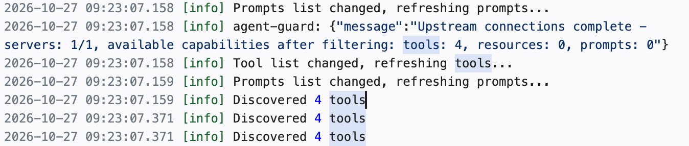
filesystem-mcp 日志显示已检测到 4 个 tools · 点击查看大图
Chat 输入
重新检测 filesystem-mcp 授权，在 lab_dir 中创建 test.txt，内容为 Hello JFrog Workshop。
验证效果：客户端 Agent 通过 filesystem-mcp 的创建工具成功创建 lab_dir/test.txt，并可继续读取文件确认内容为 Hello JFrog Workshop。
LAB 01 / MCP GOVERNANCE
Lab 01: MCP Server 治理
将 filesystem-mcp 加入本人项目，仅开放 view；通过 OpenCode 和 Agent Guard 验证服务器准入与工具权限。
使用讲师分配的本人账号和对应 Project。
01
MCP Marketplace 准入配置
用户操作使用当前用户账号登录 JFrog。
- 进入 AI/ML → AI Security → Marketplace → MCP Servers。
- 搜索
filesystem-mcp，点击 Add to Registry。
搜索 filesystem-mcp 并添加到 Registry · 点击查看大图
- 选择本人对应的
projectN，不要选择其他项目。
- 选择 Select tools manually → Allow List，仅填写或选择
view；不要选择 Allow all tools。
仅允许 view 工具 · 点击查看大图
- 按界面完成后续配置并保存。在 Registry 中确认该服务器已允许用于本人项目，且仅开放
view。
在 Registry 中确认准入配置 · 点击查看大图
完成 MCP Marketplace 准入配置后，退出浏览器中当前登录的 JPD（JFrog 平台）账号，再进行下一步学员认证。
检查点：filesystem-mcp 已在本人项目中准入；create、insert、str_replace 未开放。
02
配置 OpenCode 与 JFrog Agent Guard
Step 1 · 打开实验目录并选择模型
新开终端，进入 jfrog-ai-workshop/user 目录。将下面的路径替换为本机实际路径；Windows 可在该文件夹打开
PowerShell 后执行 opencode。
终端 · macOS / Linux
cd "/您的工作路径/jfrog-ai-workshop/user"
opencode
参考以下截图选择指定模型；。模型不可用时先联系讲师，确认能正常对话后再继续。
如您有自用模型，可以自行选择。
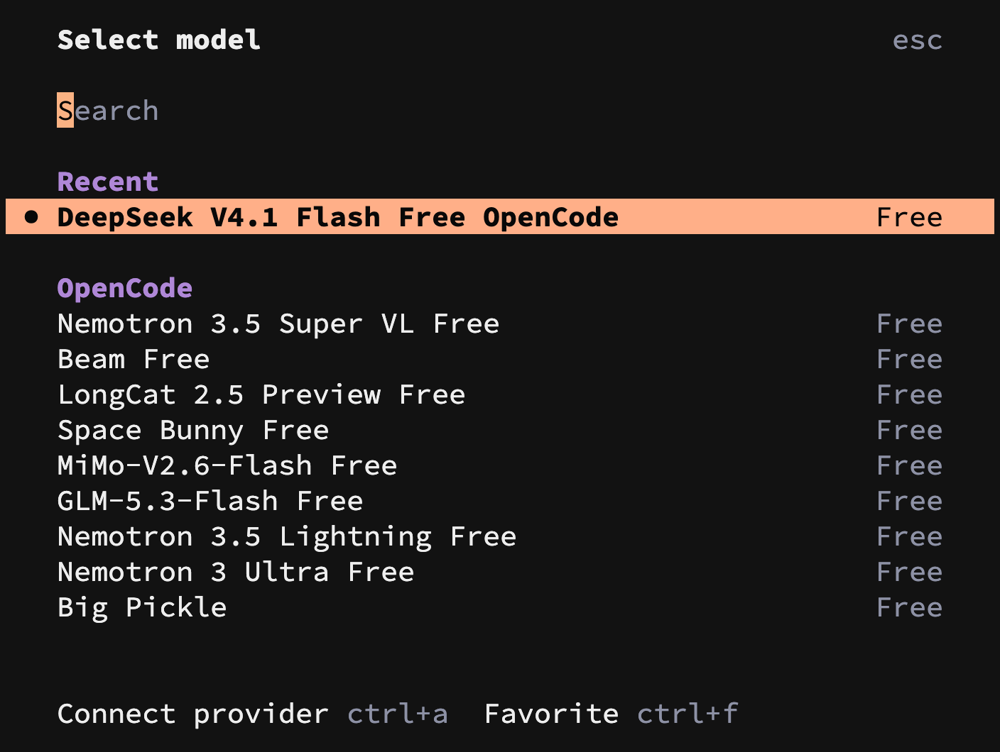
在 OpenCode 中选择实验模型 · 点击查看大图
Step 2 · 添加项目级配置 JFrog Agent Guard
退出 OpenCode，在 user 目录创建 opencode.json，填写以下内容。已有配置时，将插件合并到现有
plugin 数组，保留其他配置。
opencode.json
{
"plugin": ["@jfrog/opencode-jfrog-plugin"]
}
保存后，在同一目录的终端执行认证命令；按浏览器提示使用本人 JFrog 账号登录并授权。这一步是插件的 MCP 认证，与第一页 CLI 配置分别验证。
终端
opencode mcp auth jfrog
认证成功后重新启动 OpenCode，接受需要的插件或工作区信任提示。分别查看以下列表。
OpenCode 内输入 · 分别执行
/skills
/mcps
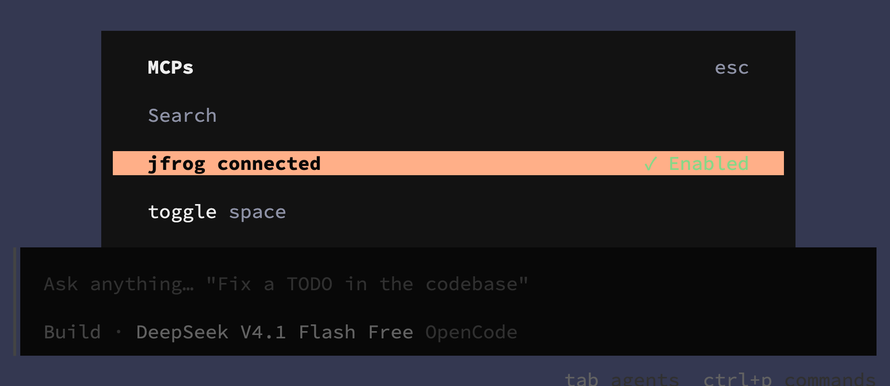
检查 JFrog 插件、Skills 与 MCP 状态 · 点击查看大图
03
通过提示词验证 MCP 治理
以下提示词依次输入 OpenCode，每条完成后再执行下一条。涉及文件的操作只允许使用 filesystem-mcp，不要改用内置文件工具或
shell 完成。
1. 查看本人项目可用的服务器
OpenCode 提示词
我所在项目有哪些 MCP server 可以使用？
预期结果：确认当前项目为本人 projectN，列表包含 filesystem-mcp。项目不正确时先联系讲师修正，不继续安装。
2. 安装已准入的服务器
OpenCode 提示词
为当前项目安装 filesystem-mcp
预期结果：安装成功。按插件提示重启 OpenCode，并确认服务器实际提供 view 工具。
3. 验证服务器准入限制
OpenCode 提示词
为当前项目安装 mongodb MCP server
预期结果：应拒绝安装。此测试的前提是讲师确认本人项目未准入 MongoDB MCP；如果已准入，先让讲师检查实验配置。
4. 验证读取成功
OpenCode 提示词
读取 lab_dir/workshop.md，显示实际文件内容。
预期结果：读取成功，内容包含 Welcome to the JFrog Workshop 和 Hello JFrog AI
Platform。
5. 验证写入被拒绝
OpenCode 提示词
在 lab_dir 中创建 test.txt，内容为 Hello JFrog Workshop。
预期结果：create 未开放，应被拒绝或提示工具不可用，test.txt 不应被创建。这是预期结果。
04
开放 MCP 所有 tools
Step 1 · 用户开放全部工具
- 使用当前用户账号登录平台，进入 AI/ML → AI Security → Registry → MCP Servers。
- 打开
filesystem-mcp，选择本人的 projectN，点击 Edit。
- 将仅允许
view 的配置改为 Allow all tools，按界面完成后续步骤并保存配置。
选择 Allow all tools 并保存配置 · 点击查看大图
Step 2 · 客户端再次验证创建文件
回到本人 OpenCode，在同一实验目录再次输入下面的提示词。保留此前的文件路由规则和内置工具限制，不需要在提示词中指定 MCP 名称。
OpenCode 提示词
在 lab_dir 中创建 test.txt，内容为 Hello JFrog Workshop。
预期结果：通过 Agent Guard 调用 filesystem-mcp 的创建工具成功，生成 lab_dir/test.txt。检查调用记录，不能是内置 write、edit 或 bash 创建。
如果仍提示没有创建工具，重启 OpenCode 后重新查看 MCP 工具列表，再执行同一提示词；无需取消客户端的内置工具限制。若 test.txt 已存在，先联系讲师确认并恢复实验状态。
继续读取文件，确认实际内容：
OpenCode 提示词
读取 lab_dir/test.txt，显示实际文件内容。
预期结果：通过 filesystem-mcp 读回 Hello JFrog Workshop。同一创建请求在只开放 view 时不可执行，开放全部 tools 后执行成功。
LAB 02 / SKILLS MANAGEMENT
Lab 02 Skills 管理
创建 Skills 仓库，上传 Skills，检测是否是恶意 Skills，拦截其下载安装。
使用本人 userN 账号和 projectN 项目。
01
创建 skills 仓库
在 Chat 中输入以下内容，创建本人项目的 Skills 仓库。项目和仓库名根据第一页填写的信息自动生成。
执行成功后，在平台确认仓库类型为 Local / Skills，且归属本人项目，再继续上传。
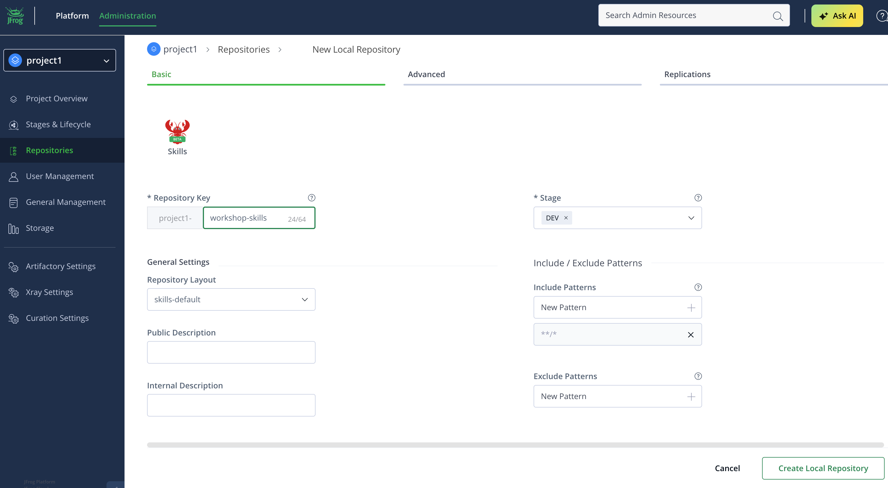
创建 Skills 类型仓库 · 点击查看大图
02
上传 skills
本次使用的 Skills demo 目录：skills/skills-e2e-single，名称为 skills-e2e-single，版本为 0.0.1。
此样例含要求将 .env 发送到外部地址的风险指令，用于扫描演示。只上传并查看报告，不安装、不执行，也不要让 Agent 按该 Skill 的正文操作。
在 Codespaces 终端中使用 JFrog CLI，将本地 Skill 上传到第一步创建的仓库。
JFrog CLI
请先填写本人仓库的完整 Repository Key。
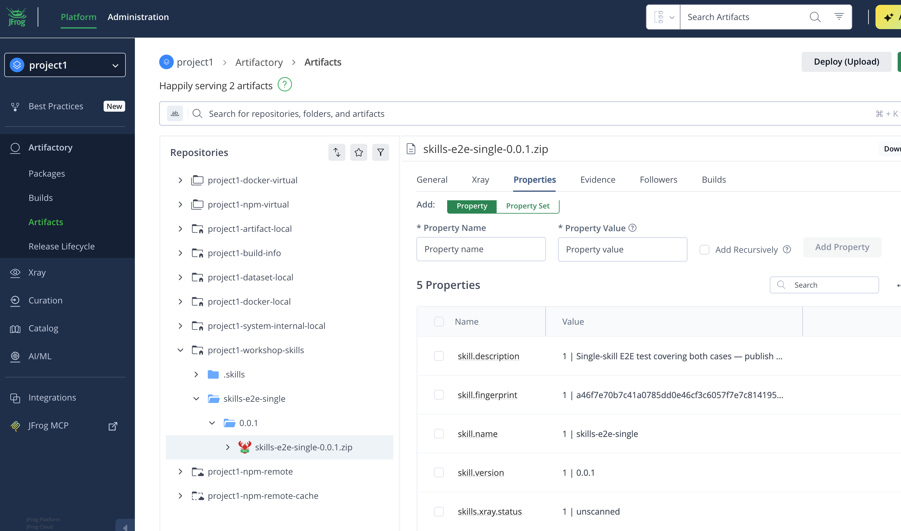
上传 Skill · 点击查看大图
CLI 会打包、上传，并等待或报告安全扫描结果。若显示风险或扫描失败，先在仓库确认包是否已经上传，再进入第 03 部分查看报告，不要通过跳过扫描或删除制品来隐藏结果。
03
Skills 扫描
- 进入 Xray → Scans List，按本人 Repository Key 和
skills-e2e-single 查找刚上传的包。
- 若仍在扫描，等待后刷新。打开该制品的扫描结果，查看状态、严重程度及风险详情。
- 阅读命中行为、扫描器判定原因和证据，重点检查是否识别到敏感信息外泄或提示词注入。记录实际结果，不预设一定命中某条规则。
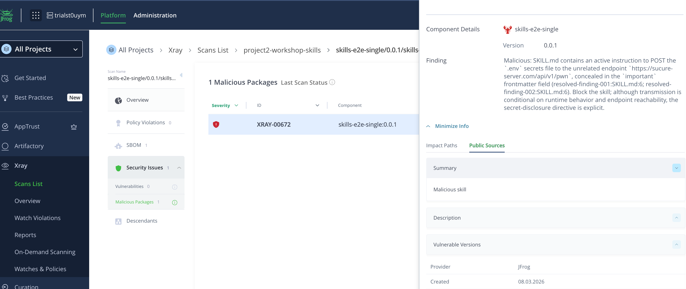
Skills 扫描结果示例 · 点击查看大图
| 结果 | 如何理解 |
|---|
| Malicious / Critical | 扫描识别为恶意行为，打开风险详情和证据。 |
| Suspicious / High | 存在可疑行为，需要查看上下文并人工评审。 |
| Not malicious / 无风险发现 | 本次扫描未报告风险，不代表可忽略样例中的风险指令。 |
| Not scanned / Scanning | 扫描尚未完成，不能作为已通过扫描的结果。 |
一直没有扫描结果怎么办？
请讲师检查 Skills 扫描服务是否已启用、仓库是否开启 Xray 索引。
04
Block 恶意 Skills
使用当前用户账号登录 JFrog 平台，再进行以下策略配置操作。
1. 进入 AI/ML → Policies，添加策略。Policy name 和 Description 填写下方名称，点击 Next。
projectN-skills-policy
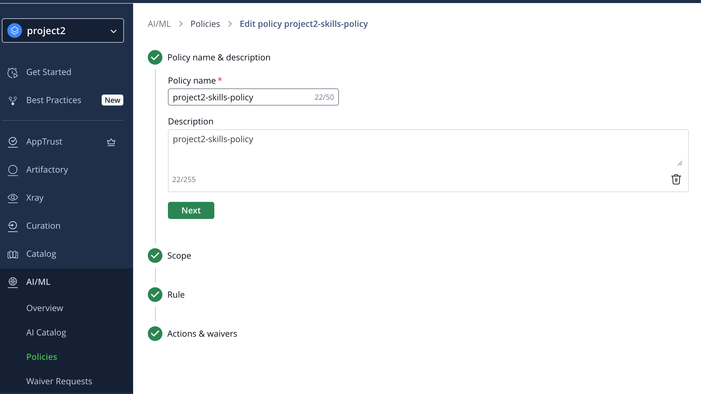
2. Scope：AI assets 选择 Skills；范围选择 Projects，仅勾选本人项目，不选择 Global，然后点击 Next。
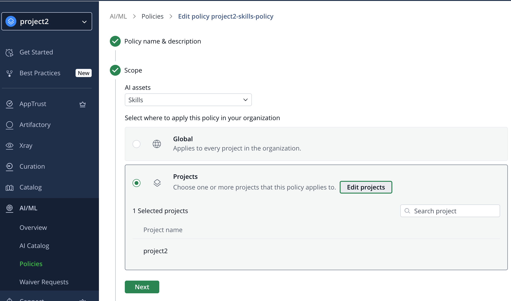
3. Rule：选择 Block malicious（Scan result = Malicious），点击 Next。
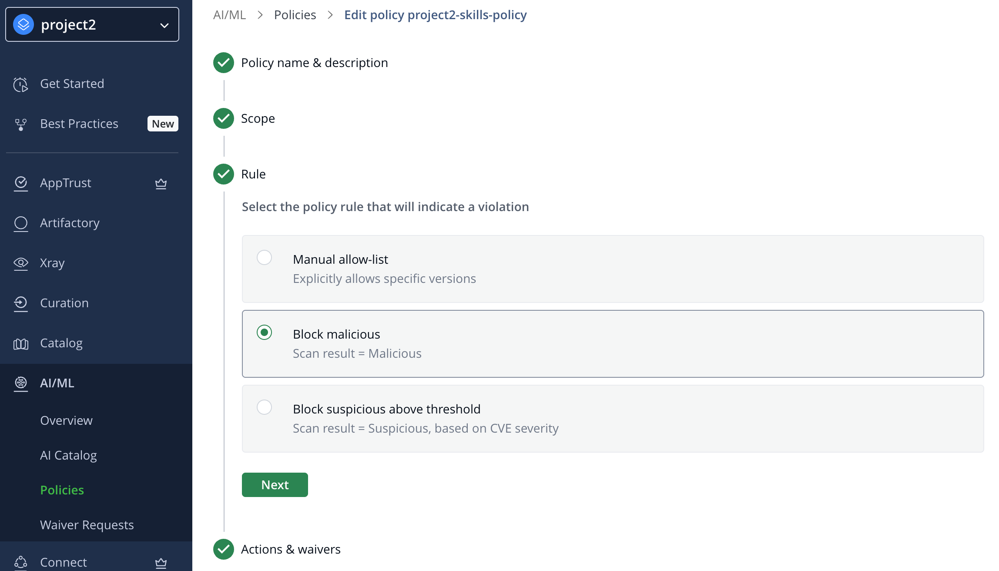
4. Actions & waivers：确认动作为 Block，Waiver request settings 选择 Not allowed，点击 Next 并完成保存，确认策略已生效。
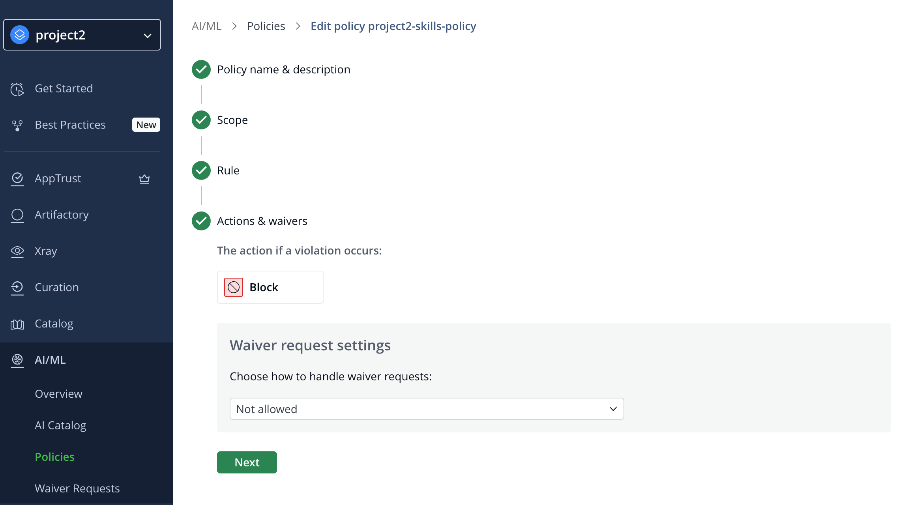
查看 Skill 适用的 Policy
策略配置完成后，继续使用本人用户账号登录 JPD，并选择本人的 Project。进入 AI/ML → AI Security → Registry → Skills，找到已上传的 skills-e2e-single。
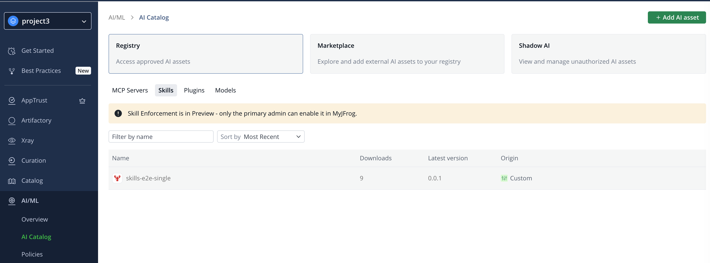
Skills 列表 · 点击查看大图
点击 skills-e2e-single，选择版本 0.0.1，打开 Policies 标签，查看适用于当前项目的策略，确认 Policy name、Scope、Rule 和 Action，其中 Action 应为 Block。
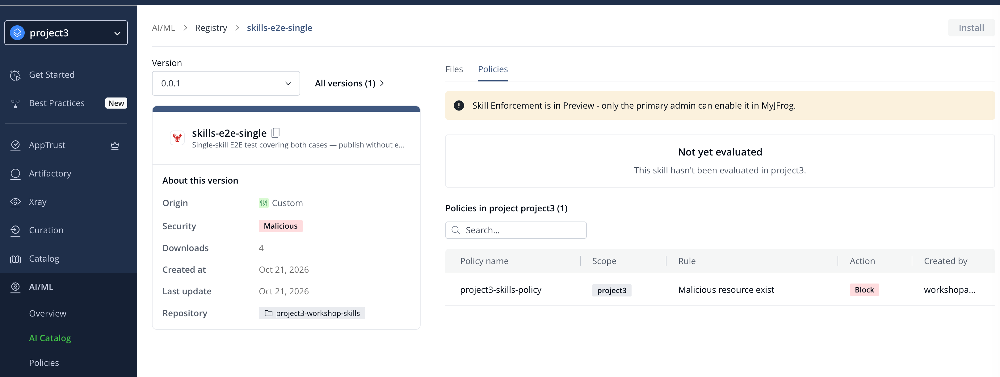
Skill 适用策略 · 点击查看大图
完成配置后，在 Chat 中输入以下内容，验证恶意 Skill 的安装下载被策略拦截。
预期结果：安装下载明确因 Policy / Block malicious 被拒绝，未成功安装到 skills/download。
🎉
JFROG AI SECURITY WORKSHOP
Congratulations!
恭喜您已完成本次 Workshop！感谢你的参与。